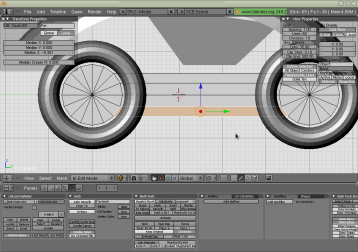
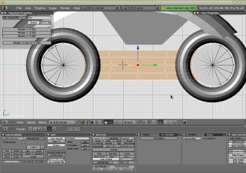

These howtos are for blender 2.49b.
Move the mouse cursor into the "3D View" window
Press 'A' to select everything
Press 'X' and click to confirm
Click "File" -> "Save As..." and save as "lightCycle.blend"
Remember to save throughout and to save often
Get the "View Properties" window by clicking "View" then "View Properties..."
In the "View Properties" window move the 3D cursor to location 0.0, 0.0, 0.0 by clicking the center of each coordinate number and typing 0
Make sure the the "3D View" window is in orthographic mode by clicking "View" then "Orthographic"
Press 'Spacebar'
Goto "Add" -> "Mesh" and click "Torus"
Press 'N' to reveal the "Transform Properties" window
Make sure the torus is highlighted
In the "Transform Properties" window change "ScaleZ" to 2.000
Go into edit mode by pressing 'Tab'
Rotate the torus 90 degrees by pressing 'R' then 'Y' for the axis and enter in 90
Press 'Tab' again to exit edit mode and go into object mode
Change to side view by clicking "View" then "Side"
In the "Transform Properties" window change "LocY" to -2.000
In the "Transform Properties" window change "OB" to "backWheel"
Hold 'Shift' and press 'D' to duplicate the object
Right click to return the duplicated object
Move the duplicated object by changing "LocY" to 3.000 in the "Transform Properties" window
In the "Transform Properties" window change "OB" to "frontWheel"
In the "View Properties" window move the 3D cursor to location 0.0, 0.0, 0.0
Click "Add" -> "Mesh" and click "Torus"
Go into edit mode by pressing 'Tab'
Rotate the torus 90 degrees by pressing 'R' then 'Y' for the axis and enter in 90
Press 'S' and enter in 4 to resize the torus
Hold 'Ctrl' and press tab and select "Vertices" for vertex select mode
Press 'Z' to make hidden vertices selectable
Press 'B' and drag the mouse to select vertices
Press 'X' and click "Vertices" to erase unwanted geometry to create a top shell
Right clicking can also be used to select vertices
Hold 'Ctrl' and press tab and select "Edges" for edge select mode
Hold 'Shift' and select two edges at the corner and press 'F' to create a face
Repeat for each corner of the shell
Use 'S' and 'G' to size and move the shell how you want it on top of the wheels
In the "View Properties" window move the 3D cursor to location 0.0, 0.0, 0.0
While still in edit mode click "Add" -> "Mesh" and click "Cube"
Right click select the top edges of the cube and press 'X' and click "Only Faces"
While the top edges are selected press 'S' and enter in 1.5
Hold 'Ctrl' and press 'L' to selected connected vertices Press 'S' and enter in 0.6
Hold 'Ctrl' and press tab and select "Vertices" for vertex select mode
Click "View" then "Side" to help position vertices
Use 'B' to select and position each corner how you want it under the shell
Press 'Tab' to exit edit mode and go into object mode
In the "Transform Properties" window change "OB" to "body"
In the "View Properties" window move the 3D cursor to location 0.0, 0.0, 0.0
Click "Add" -> "Mesh" and click "Circle"
In the "Add Circle" window type 16 for "Vertices", 0.7 for "Radius", and enable "Fill"
Go into edit mode by pressing 'Tab'
Rotate the circle 90 degrees by pressing 'R' then 'Y' for the axis and enter in 90
In the "Transform Properties" window change "LocY" to -2.000
Hold 'Shift' and press 'D' to duplicate the mesh
Right click to return the duplicated mesh
Move the duplicated mesh by changing "LocY" to 3.000 in the "Transform Properties" window
Hold 'Ctrl' and press tab and select "Edges" for edge select mode
Right click to highlight and use 'F' to connect the closest 4 edges of each circle
Press 'A' 1 or 2 times to have nothing selected
Use 'B' to select the 5 connected lines
Press 'W' and in the "Specials" window click "Subdivide Multi", use 3 for "Number of Cuts"
Hold 'Ctrl' and press tab and select "Vertices" for vertex select mode
 
Select everything except the outer edges and center vertex of each circle
Press 'W' and in the "Specials" window click "Smooth" and repeat
Press 'A' 2 times to select all
In the "Transform Properties" window change "LocX" to 0.600
Press 'E' and in the "Extrude" window click "Region"
Right click to return the duplicated mesh
In the "Transform Properties" window change "LocX" to -0.600
Hold 'Ctrl' and press tab and select "Edges" for edge select mode
Select an edge near the hubs connected to a face a wheel goes through, press 'X' and click "Edges", repeat 3 more times
Hold 'Ctrl' and press tab and select "Vertices" for vertex select mode
Select all vertices between the wheels
Press 'S' then 'X' and enter in 0.75 to resize the center of the frame
Press 'Tab' to exit edit mode and go into object mode
In the "Transform Properties" window change "OB" to "frame"
In the "View Properties" window move the 3D cursor to location 0.0, 0.0, 4.0
Click "Add" -> "Mesh" and click "Plane"
Go into edit mode by pressing 'Tab'
Rotate the circle 90 degrees by pressing 'R' then 'X' for the axis and enter in 90
Press 'Tab' to exit edit mode and go into object mode
In the "Transform Properties" window change "OB" to "sign"
Open "lightCycle.blend"
Select the "body" while in object mode
Go into edit mode by pressing 'Tab'
Press 'D' and click "Texture Solid" to differentiate the inside of faces from the outside
Press 'A' 1 or 2 times to select all
Hold 'Ctrl', press 'N' and click "Recalculate normals outside"
Repeat this process for all objects
Note: To recalculate normals inside hold 'Ctrl', 'Shift' and press 'N'
Change where it say's "Object Mode" to "Vertex Paint"
Press 'F' to enable or disable the painting mask
Press 'F9' to view paint controls in the "Buttons Window"
Press 'N' to hide or reveal the "Paint Properties"
With the painting mask enabled select a color, select what to paint and click "SetVCol"
Use 'Tab' to get in and out of edit mode for better selecting options
Change where it say's "Vertex Paint" back to "Object Mode" to switch to a different object
Note: You will need texture_to_vcol.py (a "Bake Texture to VColor" python script)
Open "lightCycle.blend"
Right click between the "3D View" and "Buttons Window" windows and click "Split Area"
Use about half the "3D View" window and change the window on the right to "UV/Image Editor"
Make sure normals are flipped the right way first
Press 'D' and click "OpenGL Solid"
Select the "body" while in object mode
Go into edit mode by pressing 'Tab'
Press 'A' 1 or 2 times to select all
Press 'F9' and in "Link and Materials" click "Set Smoot"
Repeat for all objects
Press 'D' and click "Textured Solid"
Select the "body" while in object mode
Go into edit mode by pressing 'Tab'
Press 'A' 1 or 2 times to select all
Press 'U' and click "Unwrap"
In the "UV/Image Editor" window click "Image" -> "New..." then "OK"
Click "Image" -> "Texture Painting"
Click "View" -> "Paint Tool..."
In the "3D View" press 'Tab' then 'V' to get to vertex paint mode
Click "Paint" -> "Bake Texture to VColor..." (a python script)
In the "3D View" press 'V' then 'Tab' to get to edit mode
In the "UV/Image Editor" click the "X" next to the datablock name
In the "3D View" press 'Tab' to get back to object mode
Press 'D' and click "Textured Solid"
Select the "body" while in object mode
Go into edit mode by pressing 'Tab'
Press 'A' 1 or 2 times to select all
Press 'U' and click "Unwrap"
Sometimes "Lightmap UVPack" might be a better choice
If using "Lightmap UVPack" choose 48 for "Pack Quality" and 1.000 for "Margin"
In the "UV/Image Editor" window click "Image" -> "New..." then "OK"
Press 'Tab' for object mode
Click "Add" -> "Lamp" and click "Lamp"
Move the lamp where ever you want it
Press 'F5' while the lamp is selected
In the shading panel change the type, color, and energy how you want
Use as many lamps as you need
Press 'F10' and click the "Bake" tab
Select the "body" in the "3D View" window
With "Full Render" selected click "BAKE"
In the "3D View" press 'V' to get to vertex paint mode
Click "Paint" -> "Bake Texture to VColor..." (a python script)
In the "3D View" press 'V' then 'Tab' to get to edit mode
In the "UV/Image Editor" click the "X" next to the datablock name
In the "3D View" press 'Tab' to get back to object mode
Open "lightCycle.blend"
Right click between the "3D View" and "Buttons Window" windows and click "Split Area"
Use about half the "3D View" window and change the window on the right to "UV/Image Editor"
Select the "sign" while in object mode
Hold 'Shift' and press 'D' to duplicate the object
Place the object where it can be easily distinguished from the other objects
Duplicate the "sign" object 3 more times
Press 'D' and click "Textured Solid"
Select the "body" while in object mode
Go into edit mode by pressing 'Tab'
Press 'A' 1 or 2 times to select all
Press 'U' and click "Unwrap"
In the "UV/Image Editor" window click "Image" -> "Open..."
Locate "cityGlare.bmp" in the texture folder
Press 'B' to select and use 'S' and 'G' to size and move the outline how you want over the texture
Repeat this process for the "frame" object
Add "green.bmp" to the "sign" object
Add "noise1.bmp" to the "sign.001" object
Add "noise2.bmp" to the "sign.002" object
Add "noise3.bmp" to the "sign.003" object
Add "red.bmp" to the "sign.004" object
In the "UV/Image Editor" window click "Image" -> "Consolidate into one image"
Use 512 for "Pixel Size"
Use 2 for "Pixel Margin"
Click "All Sel Objects" and "OK"
In the "UV/Image Editor" window click "Image" -> "Save As..."
Save image as "lightCycle.bmp" make sure to choose the "BMP" option
In the "UV/Image Editor" window click "Image" -> "Replace..." and choose "lightCycle.bmp"
Using "lightCycle.bmp" as a template, open it with an image editor
Anything painted with black is hidden
Anything painted with white is visible
Save as "lightCycleMask.bmp"
Note: You will need c_exportTex.py and c_importTex.py
Open "lightCycle.blend"
Goto "File" -> "Export" -> "C code tex (.c)..."
Goto "File" -> "Import" -> "C code tex (.c)..."
Choose a compatible c file